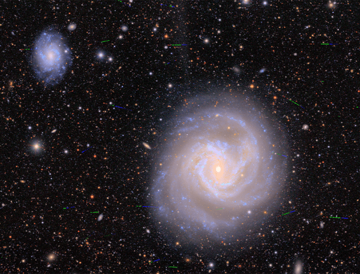
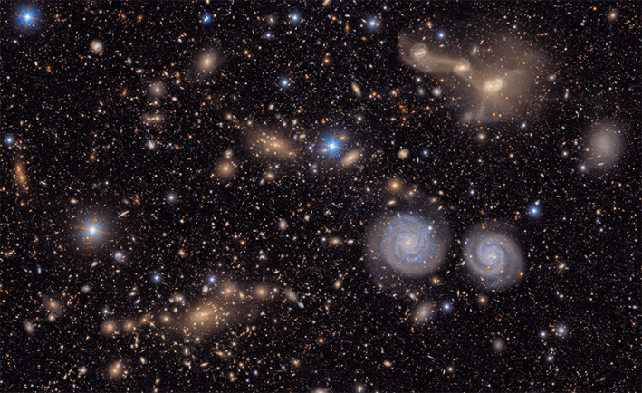
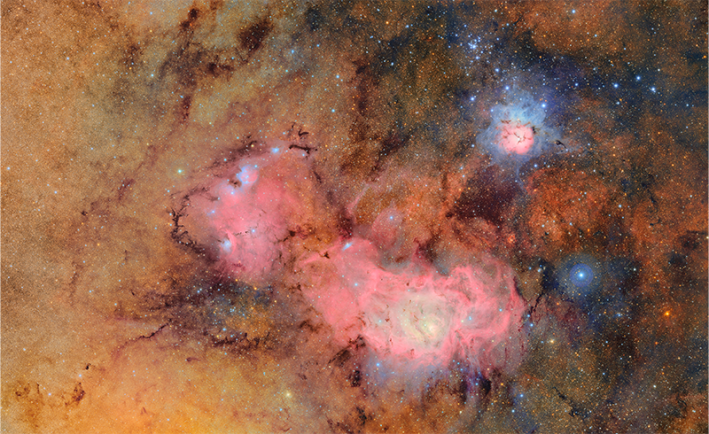

On June 23, 2025, the world saw the universe with a new pair of eyes.
That was the release date for the first images from the Vera C. Rubin Observatory. These pictures showed a kaleidoscope of dazzling galaxies, swarms of previously undetected asteroids, and variable stars flashing. The pictures are breathtaking and were compiled after a mere 10 hours of observing. And it’s only the beginning.
The Rubin Observatory, nestled high in the mountains of Chile, will not spend its time imaging individual stars, galaxies, or planets, nor does it have a single type of target. Rather, over the course of the next 10 years, Rubin will scan the entire southern sky again and again, creating a time-lapse movie of the cosmos. In addition, certain patches of the sky, called “Deep Drilling Fields,” will be imaged some 23,000 times, giving an even more precise time-varying picture of the sky. It’s the largest movie on the biggest screen, and astronomers can’t wait.
Called the Legacy Survey of Space and Time (LSST), it’s an ambitious project that will enable a plethora of astronomy to be done in various disciplines. Astronomers will be able to detect things that would be impossible to see in a single observation, such as asteroids traveling through the inky blackness of space, supernovae exploding, stars dimming or brightening, or exoplanets orbiting their stars.
“Rubin is expected to detect about a million new supernovae per year.”
This cosmic movie will contain a historic amount of data. Rubin will take three images a minute with a 3,200 megapixel camera. This means that every night, Rubin will produce 20 terabytes of data. That’s more than 60 petabytes by the end of the survey.
It’s a lot of data, the likes of which astronomers haven’t dealt with before.
“The amount of data is truly mind-boggling. It’s the largest camera ever built for astronomy, and its output of data is a lot to reckon with,” says Colin Orion Chandler, a planetary scientist at Northern Arizona University.
“Astronomers have always been so photon starved,” says Arpita Roy. “We’re about to move into this inverse era, I think that’s going to be incredible.” Roy leads astrophysics and space at Schmidt Sciences. Existing strategies for data management will be woefully inadequate to deal with the massive amount of data coming out of Rubin. So to help prepare scientists to deal with this amount of data, Schmidt Sciences is providing support for a team of astronomers, data scientists, and software engineers working on a project called LINCC Frameworks. LINCC stands for the LSST Interdisciplinary Network for Collaboration and Computing. A collaboration between the University of Washington, Carnegie Mellon University, and the LSST Discovery Alliance—and supported by Schmidt Sciences—LINCC is a massive initiative to compile ways to handle this raw data from Rubin, processing it quickly and efficiently so that it can be used by astronomers. Various software tools provided by LINCC will help astronomers parse the data, whether they are looking for comets, modeling light curves of supernovae, or mapping dark matter.
Cosmic Wanderers
Remnants from our solar system’s formation, more than 1 million known asteroids lurk in our solar system. They are numerous, yet tiny, having cumulatively less mass than the Earth’s moon. Because of this, asteroids have always been difficult to spot. However, astronomers have a trick up their sleeves. Time-lapse observations, such as the ones Rubin will provide, create a movie of our solar system, allowing asteroids to quickly stand out as they move swiftly in front of a background of the more stationary stars. This method will also allow scientists to find previously unknown comets—icy snowballs that come from the outer reaches of our solar system.
Rubin’s method of searching the sky is already proving incredibly fruitful for finding these cosmic wanderers. Even after the initial 10 hours of observations, it was clear that LSST would find asteroids. A lot of asteroids.
“One of the things that was most stunning ... that took me by surprise, was the number of asteroids they got just in a few pointings,” says Roy. In the first 10 hours of observations, Rubin found more than 2,000 new asteroids—several of which were beyond Neptune and seven of which were considered “Near-Earth Asteroids” that spend some time in the Earth’s neighborhood.

MOVING PICTURES:This image, from the Vera C. Rubin Observatory, reveals numerous asteroids flying through space (indicated by the colored lines), as well as two distant galaxies from the Virgo Cluster. Credit: NSF–DOE Vera C. Rubin Observatory.
In order to find these small cosmic wanderers, Chandler is developing a LINCC Framework approach called the Kernel-Based Moving Object Detection (KBMOD). KBMOD will help scientists quickly parse Rubin’s massive amount of data to find small moving objects such as asteroids and comets.
Chandler points out that, while finding these objects is interesting, there’s valuable science to learn as well. These observations may give us hints about how our solar system formed. “I’m very excited by the prospect of finding more comets to improve our understanding of where ices are found in the solar system, and even where Earth’s water came from,” he says.
Interstellar objects, ones that originate outside of our solar system, have also already been detected. These objects can give us hints about the formation conditions of planetary systems outside of our own.
Exploding Stars
As Rubin images the sky night after night, it is excellently poised to detect transient phenomena—cosmic events that are here one moment and then gone the next. A prime example is supernovae—exploding stars that are gone in the blink of an eye in cosmic time. To detect these events, it’s important that LINCC Frameworks not only work well, but work quickly.
Certain types of supernovae can peak and fade over the course of a hundred days, others a mere month. This might sound like a long time, but astronomers don’t have this entire time to observe the supernova. First, the supernova needs to be found, and follow-up observations (sometimes at different wavelengths) need to be made. These are all easiest when the supernova is at its peak brightness and before it fades from view.
Rubin will scan the sky every three to four days. This is enough to image a plethora of exploding supernovae. But actually finding them in the data is another story. “A big question that we’ve been battling with is, how do you sort through this much data?” says Kaylee de Soto, a LSST-Data Science Fellow at the Center for Astrophysics at Harvard University. “For context, Rubin is expected to detect about a million new supernovae per year, which is far more than anything we’ve dealt with.”

A BUSY UNIVERSE:Detailed images from Rubin are revealing the distant dynamism of the heavens. This slice of the Virgo Cluster’s many galaxies shows two large spiral galaxies as well as three others that are in the process of merging. Credit: NSF–DOE Vera C. Rubin Observatory.
“I just find that really exciting. I like the idea that we’re looking at something that inevitably disappears,” says de Soto. “We have a month to learn everything we can about it. And then next month, there will be a whole new set of objects to look at.”
Here, machine learning algorithms will come into play, which can automatically filter the data, looking for new bright points of light that herald a supernova. When one is found in the data, an alert will go out in real time. De Soto works to help automate the categorization of these supernovae. She designed Superphot+, a LINCC framework that quickly analyzes the photometry, or brightness, of a supernova. These alerts contain not only a notice that the supernova has occurred, but also labels and categories that help identify prime targets for further research, explains Ashley Villar, an astrophysicist at Harvard University.
Grappling with Dark Energy
Rubin’s data about exploding stars might give astronomers another insight—one into the mysterious force known as dark energy.
Naively, looking out at the cosmos, we expect distant galaxies to be slowing in their expansion—pulled together by the mutual force of gravity. Surprisingly, however, distant galaxies are actually moving faster and faster away from one another—indicating that some unknown force counteracting gravity is pushing galaxies farther apart. The repulsive force of dark energy also slows down the development of cosmic structure. The nature of dark energy is one of astronomy’s biggest mysteries.
“How do you sort through this much data?”
A special type of supernova—dubbed supernova type 1a—may help provide clues to dark energy. Because supernovae type 1a have a uniform intrinsic brightness, comparing how bright they appear gives us an excellent estimate of the distance of their host galaxies. As Rubin catalogs more and more supernovae type 1a, we will have a better understanding of how dark energy is affecting the cosmos.
“Those are the two things that we try to measure: the accelerated expansion and the impact of that on cosmic structure,” explains Rachel Mandelbaum, a co-PI for LINCC Framework based out of Carnegie Mellon University. By imaging each area in the sky so frequently, more supernovae can be found and followed up on to try to decipher the strange force of dark energy.
Narrowing in on the Unexpected
Having automatic frameworks in place to process and sift through the enormous amounts of data certainly helps certain fields of astronomy where astronomers know what they are looking for. But science really moves forward when we find something completely unexpected. If these data-analysis frameworks are based on known types of objects, such as comets or supernovae, it begs the question—how will astronomers discover something truly new and anomalous?

TIME-LAPSE:Because it gathers so many images, the Rubin Observatory can bring to light previously unnoticed detail. This combination image compiles more than 670 images taken over the course of about seven hours. It reveals new subtleties of the Trifid and Lagoon nebulae and their gas clouds, thousands of light-years from us. Credit: NSF–DOE Vera C. Rubin Observatory.
“Throughout the history of astronomy, discoveries have often been made by someone looking into the data, noticing something weird, and investigating what they saw,” says Konstantin Malanchev, a LINCC project scientist based out of Carnegie Mellon University. “The problem is that with the current volume of data, human-driven discoveries are becoming really difficult.”
Malanchev is a co-convener of the LSST Informatics and Statistics Science Collaboration Anomaly Detection Interest Group. He explains that the amount of data can be a benefit here, as long as one is creative about using it. By filtering out known objects and using techniques such as machine learning, anomalous events or objects can be detected. “My hope is that a combination of machine learning, human expertise, and a bit of luck will lead to new discoveries,” he says.
And new science is bound to happen. Andrew Connolly, a co-PI of LINCC Frameworks at the University of Washington, explains. “When you open up a new window on the universe, [in this case] the window of time, you have an opportunity to discover many new phenomena and types of stars and galaxies—new astronomical sources or events that might test our understanding of how the universe formed and evolved.”
“The challenges are the sheer data volume,” says Anais Möller, a physicist at Swinburne University, who isn’t involved in the LINCC work. “Meeting this challenge means embracing big data technologies like distributed computing [and] machine learning, because at this frontier, frontline discoveries are inseparable from frontline technology.”
The amount of insight promised by the Rubin Observatory will be a treasure trove for scientists for decades to come—but only in as much as the massive amounts of data can be processed and put to good use. 
Lead image: NSF–DOE Vera C. Rubin Observatory